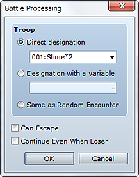
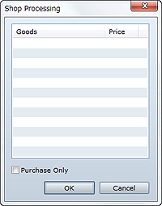
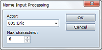

Spawns an enemy troop and begins a battle against it.
Specify the enemy troop the player will battle. To have the player battle a specific troop, select Direct designation and then specify the desired troop. To specify a troop by its ID, select Designation with a variable and then specify the variable to look up. Selecting Same as Random Encounter spawns a troop selected based on the Encounters settings for the map the party is on.
Selecting this option enables the Escape command during battles, and processing can be branched depending on whether the party won or escaped (If Won or If Escaped).
When this option is selected, the game does not end even if the entire party is defeated, and processing can be branched depending on whether the party won or lost (If Won or If Lost).
• This command cannot be used in battle events.

Starts shop processing for buying/selling weapons, armor, and other items.
Specify what is for sale. Double-clicking on a blank row displays a dialog box in which you can enter settings for Merchandise and Price. Setting Price to Standard specifies prices set in the Database, while Specify is for specifying prices to apply only to this event command.
When this option is selected, the player will not be able to sell inventory items.
• This command cannot be used in battle events.

Displays a window for the player to enter a new name for an actor.
Specify the actor subject to the name change.
Specify the maximum number of characters (1 to 16) that can be entered.
• This command cannot be used in battle events.
• Name entry while playing the game uses the directional buttons to move the cursor, the confirm button to add characters, and the cancel button to clear a character from the end of the name with each press.
Calls a menu screen. There are no settings to be made for this command.
• This command cannot be used in battle events.
Calls a save screen. There are no settings to be made for this command.
• This command cannot be used in battle events.
Forcibly ends the game and displays the Game Over screen. There are no settings to be made for this command.
Forcibly ends the game and returns to the title screen. There are no settings to be made for this command.